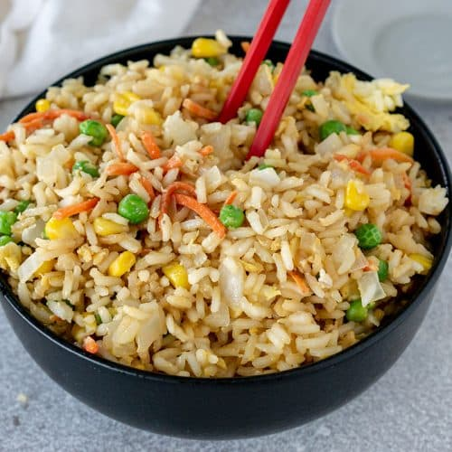

Fried Rice

Description
This Chinese-inspired fried rice recipe is quick and easy to make, customizable with any of your favorite mix-ins, and so irresistibly delicious.
Ingridients
- 3 tablespoons butter, divided
- 2 large eggs, whisked
- 2 medium carrots, peeled and diced
- 1 small white onion, diced
- 1/2 cup frozen peas
- 3 cloves garlic, minced
- salt and black pepper
- 4 cups cooked and chilled rice
- 3 green onions, thinly sliced
- 3-4 tablespoons soy sauce, or more to taste
- 1/2 teaspoons toasted sesame oil
Steps
- Heat 1/2 tablespoon of butter in a large sauté pan over medium-high heat until melted.
Add egg, and cook until scrambled, stirring occasionally. Remove egg, and transfer to a
separate plate.
- Add an additional 1 tablespoon butter to the pan and heat until melted. Add carrots, onion,
peas and garlic, and season with a generous pinch of salt and pepper. Sauté for about 5 minutes
or until the onion and carrots are soft. Increase heat to high, add in the remaining 1 1/2
tablespoons of butter, and stir until melted. Immediately add the rice, green onions, soy sauce
, and stir until combined. Continue sautéing for an additional 3 minutes to fry the rice, stirring
occasionally. Then add in the eggs and stir to combine. Remove from heat, and stir in the sesame
oil until combined. Taste and season with extra soy sauce, if needed.
- Serve immediately, or refrigerate in a sealed container for up to 3 days.